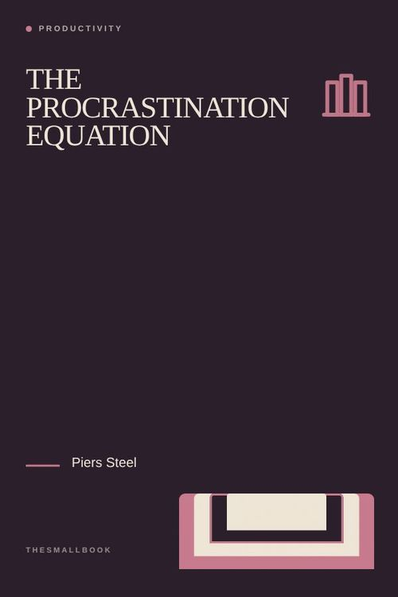
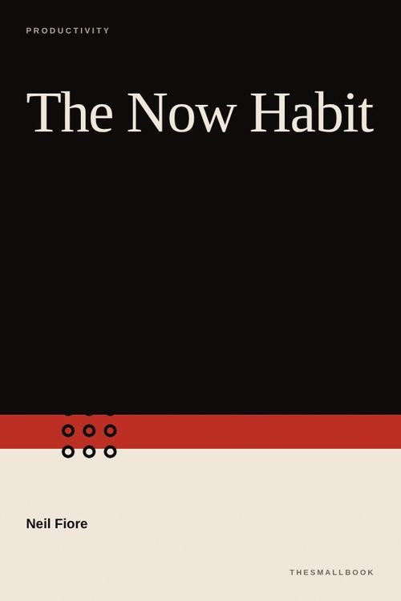

Library › Ask the Library › How do I stop procrastinating?
How do I stop procrastinating?
The short answer
Procrastination is rarely laziness, it's usually fear (of failure or judgment) plus a reward that's too far away. The library's fix is mechanical: shrink the task, raise the reward, and start before your brain can argue.
The books behind the answer
Eat That Frog!
Brian Tracy · 2001 · 8 min · 6 lessons
Your 'frog' is the biggest, most important task you're most likely to procrastinate on. Eat it first, every morning, and the day is won.
- Slice the Frog: Slice the frog: when a task feels huge, cut it into a first step so small it's embarrassing, then do only that.

The 5 Second Rule
Mel Robbins · 2017 · 8 min · 6 lessons
You'll never feel like it. Count 5-4-3-2-1 and move before your brain kills the impulse - a launch code for the life you keep postponing.
- The Activation Energy Problem: Count 5-4-3-2-1 and move before your brain finishes talking you out of it. Activation energy is the whole battle.

The Procrastination Equation
Piers Steel · 2010 · 8 min · 6 lessons
Procrastination is a math problem: Motivation = Expectancy × Value ÷ (Impulsiveness × Delay). Fix the variables.
- The Equation: Motivation = Expectancy × Value ÷ (Impulsiveness × Delay). Fix the weakest variable and the delay dies.

The Now Habit
Neil Fiore · 1988 · 8 min · 6 lessons
Procrastination is not a time-management problem - it's an emotion-management problem. Change the feeling, change the habit.
- The Five-Minute Start: Commit to five minutes of the dreaded task. Starting is the actual skill, the anxiety evaporates once you move.
A failure that proves it
Why did Kodak fail?
2012 · BUSINESS · Loss: A 130-year empire
Kodak invented digital photography in 1975, then waited decades to act. Procrastination at company scale killed a 130-year empire.
Your cash cow is someone else's target. Cannibalize yourself or be eaten - the choice is only ever WHO does it, never whether.
Also asked in Hindi and Hinglish
People also ask this as: kaam ko taalna kaise band karein, aalsi pan kaise door karein, kal karenge wali aadat kaise badlein. The answer on this page stays in simple English, and the live book can be read in Hindi or Hinglish.
Questions people ask next
Can I read this in Hindi?
Yes. This answer is written in simple English. Open any linked book and choose Hindi or Hinglish to read the full lessons in your language, with audio where available.